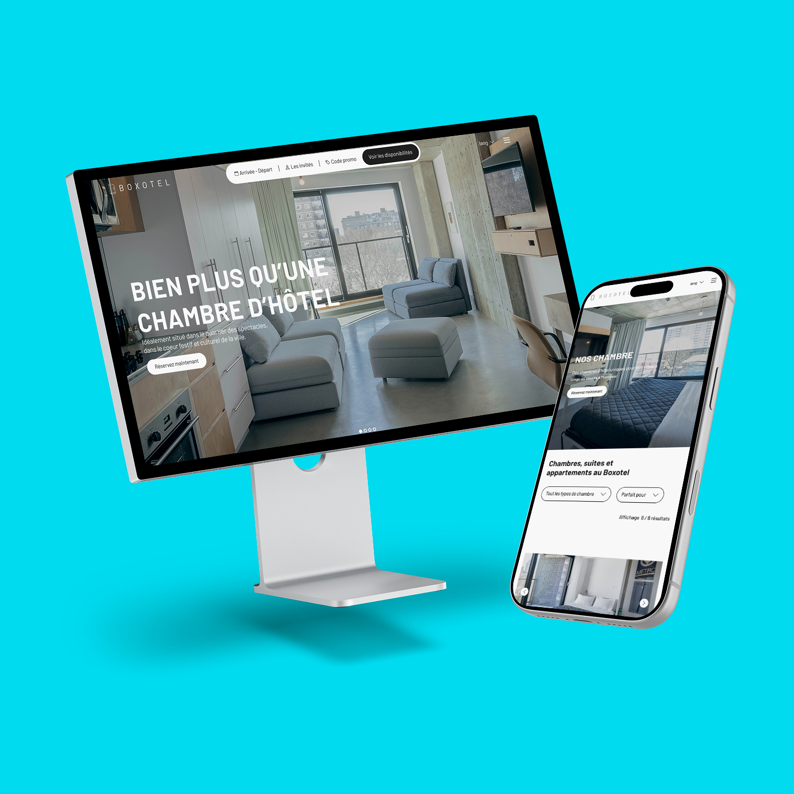

année
titre
en gros
Projet de robotique internationale qui vise les jeunes étudiants passionnés par les sciences. Le projet était conçu pour être présenté aux commanditaires, aux juges et aux élèves.
Marathon créatif de 36 heures réunissant 44 participants en 11 équipes pour concevoir un site web dynamique à partir d’une thématique imposée.
Refonte UX et UI d’un site hôtelier qui ne reflétait pas adéquatement les services proposés. Optimisation du parcours de navigation, de la hiérarchisation des informations et de l’intégration web.
Nous devions créer une entreprise qui offrait des services de rebranding, visant les sites web, les images de marque ou tout autre mandat nécessitant une quelconque modernisation.
Création du prototype d’une application de cinéma permettant à ses utilisateurs de partager leurs avis sur un film avec leurs amis. L’application peut être comparée à un réseau social.
Ce projet a été réalisé dans le cadre de mon portfolio afin de créer une identité visuelle qui représente